实现业务系统中的用户权限管理--实现篇
在设计篇中，我们已经为大家阐述了有关权限管理系统的数据库设计，在本篇中，我们将重点放在其实现代码部分。为了让你能够更直接更有效的看到全部动作的代码，我们使用“动作分解列表”的方式来陈述每个动作以及相关资源。
实现权限管理功能的动作
系统动作
详解模组：
1.setup(数据库初始化、权限设置模组)
当布署好一个新的系统后，我们可以通过执行一个动作setup来安装数据库和一些初始值，通过执行这个动作系统可以正常运行。因为执行setup这个动作时会调用到一个名称为setup的模组，这个模组的作用是初始化系统所用到的数据库，并且在系统中设置动作的权限，否则数据库和有权限的动作就没办法执行。下面我们来看一下setup模组的代码，点击这里查看代码。这里我们把代码拆分开看一下，由于setup模组里有好多类似的代码，所以这里我们只找出不同功能的代码做一下介绍：
第一段：数据库安装
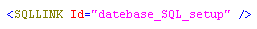
在模组中首先调用了一个datebase_SQL_setup这个数据库操作集，这个数据库操作集用来为系统中的数据库表（根据情况删除或新建）做初始化。
第二段：添加权限信息
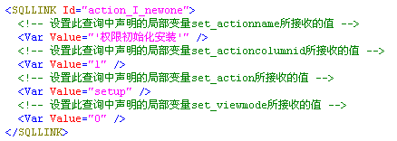
代码中调用了action_I_newone这个数据库操作集，在这个操作集中加入权限的名称和它的其它信息。
第三段：添加一个管理员
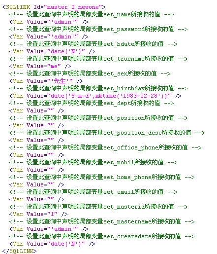
这部分代码中调用了master_I_newone数据库操作集在数据库中添加了一个管理员的信息，这个信息是可以不写在这里的，可以直接在数据库中添加，但是为了减少不必要的麻烦所以直接在这里添入了一个默认的管理员。
第四段：添加管理员组
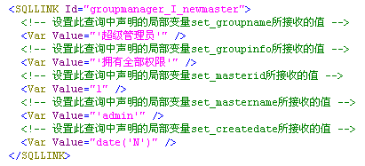
通过调用groupmanager_I_newmaster这个数据库操作集新建了一个管理员组，并加入了详细的管理员组信息，可以把新用户加入到此管理员组。
第五段：添加新的工具分栏
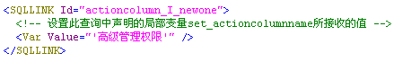
通过调用actioncolumn_I_newone数据库操作集在工具栏里加入一个工具栏分栏选项。
第六段：指定管理组
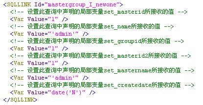
通过调用mastergroup_I_newone数据库操作集把admin这个用户加入到第一个管理组里，使该用户成为第一个管理组的成员。
最后一段：指定管理组拥有的权限
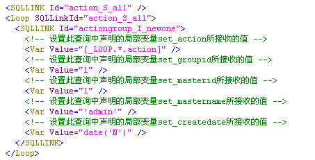
这段代码首先调用了action_S_all数据库操作集并使用Loop语句列出所有的动作，然后调用actiongroup_I_newone这个数据库操作集，把所有的动作都加入到第一个管理组里，使第一个管理组拥有所有权限。
这里之所以把数据库的安装和权限的设置都放在模组里面，是为了使用户使用更加方便，不需要再去重新手动建库，以减不在数据库这方面的错误，使系统更加简单流畅。如果其它系统也需要权限这方面的管理，可以把模组稍做修改就可以直接拿来用，这样也体现出代码的重用性。
2.checkuserpurview（检验当前用户能否执行该动作的模组）
在权限管理系统中，模组checkuserpurview得到了反复使用，该模组担负着检测用户权限的任务，在所有需要进行访问权限控制的动作的开始部分都调用了该模组，所以理解该模组的代码也有一定难度。下面，我们来看一看该模组的代码。
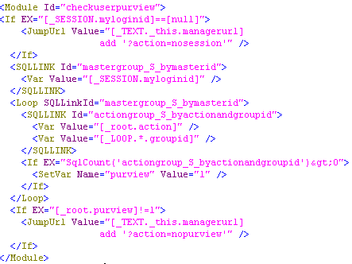
我们将整段代码拆分一下，首先看第一段，如下图：
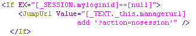
判断_SESSION.myloginid的值是否为空，如果为空，在当前页面中执行nosession这个动作。我们在用户登陆的动作中login会为登陆的用户使用myloginid的SESSION变量记录下该用户的ID，因此如果用户是正常登陆并在SESSION有效期内的话，则_SESSION.myloginid的值是不可能为空的。通过此部分代码检测用户是否已经登陆成功并获得合法的访问身份。
然后看下面的代码，如下图：
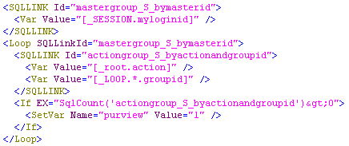
调用数据库操作集mastergroup_S_bymasterid，使用逻辑层的Loop，使用当前执行的action以及查询返回的groupid作为条件，调用数据库操作集actiongroup_S_byactionandgroupid进行循环查询，如果查询返回值大于0（零），将局部变量purview的值设置为1。
这段代码的重点在于使用的Loop进行循环，由于actiongroup表中记录着用户所处的管理组能够执行的权限，并且一个用户可能同时会属于多个组，因此我们需要去检验用户属于的多个组中是否有对该动作执行的权限，因此，我们使用当前需要执行的动作action以及用户所处的管理组groupid循环查询，当前用户所属于的组中只要有一个组具有执行该动作的执行权限，则该用户就可以执行该动作。
最后一部分代码如下图：
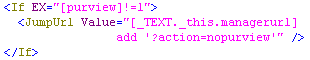
再次使用判断，如果purview的值不为1的话，则在当前页面执行nopurview动作。
由于之前的代码中，如果用户拥有执行动作的权限的话，会将局部变量purview的值设置为1，所以这里如果该变量值不为1，就说明了此用户没有执行动作的权限，故执行nopurview动作。
总结
从设计到实现，权限管理系统的教程到这里就全部结束了。在设计阶段，最重要也是最难理解的是那两张映射表的作用，理解了两张映射表，基本上也就理解了整套数据库的设计。而实现阶段，比较难理解的就是上面说到的模组checkuserpurview了。理解该模组，需要联合数据库设计，actiongroup表中记录着用户组可以执行的权限，使用action字段和groupid字段进行查询，返回的数大于1，说明了用户所在的组拥有执行该动作的权限。
附录
MYSQL版本权限管理系统源码下载
MSSQL版本权限管理系统源码下载